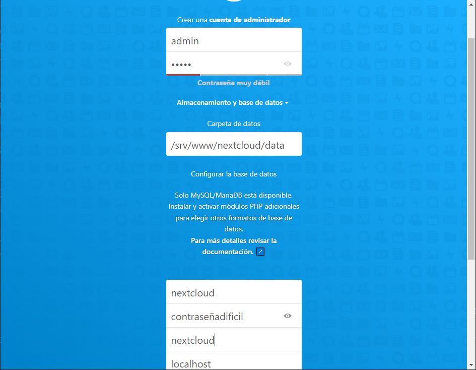

7.2.2.3.9. Nextcloud¶
Nextcloud es una plataforma para el acceso y la compartición de archivos en la nube a la manera de soluciones comerciales como Dropbox o Drive, aunque es software libre y permite su instalación en un servidor web propio.
7.2.2.3.9.1. Preliminares¶
Antes de proceder a su instalación, debemos tener instalado completamente un servidor nginx con soporte para contenido dinámico generado con PHP y base de datos MySQL. A partir de ello deberemos añadir al menos los siguientes paquetes:
# apt install php-{gd,curl,mbstring,intl,gmp,bcmath,xml,imagick,zip}
Además consideraremos que la máquina tiene asociado el nombre de red cloud.example.net.
Basándonos en la guía proporcionada por la documentación oficial del propio proyecto, la configuración para nginx, si se instala el servicio en el directorio raíz del sitio, puede ser esta:
# Set the `immutable` cache control options only for assets with a cache busting `v` argument
map $arg_v $asset_immutable {
"" "";
default "immutable";
}
server {
listen 80;
listen 443 ssl http2;
server_name cloud.example.net;
if ($https != "on") {
return 301 https://$host$request_uri;
}
root /srv/www/nextcloud;
index index.php index.html /index.php$request_uri;
include snippets/snakeoil.conf;
# Opcional: impide que el servidor se identifique ante el cliente
server_tokens off;
# Aumentamos la información que podemos subir
# y el tiempo de subida para evitar errores de timeout.
# ¡Ojo! Habrá que tocar solidariamente la configuración de PHP.
client_max_body_size 512M;
client_body_timeout 300s;
fastcgi_buffers 64 4K;
# Habilitamos compresión para algunos tipos de archivos.
gzip on;
gzip_vary on;
gzip_comp_level 4;
gzip_min_length 256;
gzip_proxied expired no-cache no-store private no_last_modified no_etag auth;
gzip_types application/atom+xml application/javascript application/json
application/ld+json application/manifest+json application/rss+xml
application/vnd.geo+json application/vnd.ms-fontobject application/wasm
application/x-font-ttf application/x-web-app-manifest+json
application/xhtml+xml application/xml font/opentype image/bmp
image/svg+xml image/x-icon text/cache-manifest text/css text/plain
text/vcard text/vnd.rim.location.xloc text/vtt text/x-component
text/x-cross-domain-policy;
# Sólo si el servidor tiene el módulo `ngx_pagespeed`
#pagespeed off;
# Para optimizar HTTP2
# Véase https://blog.cloudflare.com/delivering-http-2-upload-speed-improvements/
client_body_buffer_size 512k;
# Cabeceras de respuesta HTTP
add_header Referrer-Policy "no-referrer" always;
add_header X-Content-Type-Options "nosniff" always;
add_header X-Download-Options "noopen" always;
add_header X-Frame-Options "SAMEORIGIN" always;
add_header X-Permitted-Cross-Domain-Policies "none" always;
add_header X-Robots-Tag "noindex, nofollow" always;
add_header X-XSS-Protection "1; mode=block" always;
# Evitamos dar más información de la debida.
fastcgi_hide_header X-Powered-By;
# Debemos añadir .mjs como tipo application/javascript
include mime.types;
types {
application/javascript mjs;
}
# Para soporte de los clientes WebDav de Microsoft
location = / {
if ( $http_user_agent ~ ^DavClnt ) {
return 302 /remote.php/webdav/$is_args$args;
}
}
# Véase la configuración sugerida para Wordpress
include snippets/robotsoff.conf;
include snippets/acme.conf;
location ^~ /.well-known {
location = /.well-known/carddav { return 301 /remote.php/dav/; }
location = /.well-known/caldav { return 301 /remote.php/dav/; }
location /.well-known/pki-validation { try_files $uri $uri/ =404; }
return 301 /index.php$request_uri;
}
# Evitamos que los clinetes accedan a estos recursos
location ~ ^/(?:build|tests|config|lib|3rdparty|templates|data)(?:$|/) { return 404; }
location ~ ^/(?:\.|autotest|occ|issue|indie|db_|console) { return 404; }
location ~ \.php(?:$|/) {
rewrite ^/(?!index|remote|public|cron|core\/ajax\/update|status|ocs\/v[12]|updater\/.+|oc[ms]-provider\/.+|.+\/richdocumentscode\/proxy) /index.php$request_uri;
include snippets/fastcgi-php.conf;
fastcgi_pass php;
fastcgi_param modHeadersAvailable true;
fastcgi_param front_controller_active true;
fastcgi_intercept_errors on;
fastcgi_request_buffering off;
fastcgi_max_temp_file_size 0;
}
location ~ \.(?:css|js|svg|gif|png|jpg|ico|wasm|tflite|map)$ {
try_files $uri /index.php$request_uri;
add_header Cache-Control "public, max-age=15778463, $asset_immutable";
access_log off;
location ~ \.wasm$ {
default_type application/wasm;
}
}
location ~ \.woff2?$ {
try_files $uri /index.php$request_uri;
expires 7d;
access_log off;
}
location /remote {
return 301 /remote.php$request_uri;
}
location / {
try_files $uri $uri/ /index.php$request_uri;
}
}
En esta configuración (descargable aquí)
hemos usado robotsoff.conf y acme.conf, ya presentados en recetas anteriores.
Por último, deberemos modificar la configuración de PHP, de manera que en
/etc/php/7.4/fpm/php.ini aumentemos los tamaños permitidos:
post_max_size = 512M
upload_max_filesize = 512M
y en /etc/php/7.4/fpm/pool.d/www.conf descomentemos:
clear_env = no
7.2.2.3.9.2. Instalación¶
La instalación, como en otro tipo de aplicaciones web, consiste en descargar y
situar la aplicación en el directorio establecido en la configuración
(/srv/www/nextcloud):
# mkdir -p /srv/www/nextcloud
# wget -qO - 'https://download.nextcloud.com/server/releases/latest.tar.bz2' | tar -C /srv/www --strip-components=1 -jxvf -
# chown -R www-data:www-data /srv/www/nextcloud
Advertencia
Bullseye tiene PHP 7.4 por lo que sólo será posible instalar la versión 24 del software, ya que a partir de la versión 25 se exige PHP 8.
y preparar la base de datos y el usuario de tal base que se usará:
# mysql
mysql> CREATE DATABASE IF NOT EXISTS nextcloud CHARACTER SET utf8mb4 COLLATE utf8mb4_general_ci;
mysql> GRANT ALL PRIVILEGES ON nextcloud.* TO 'nextcloud'@'localhost' IDENTIFIED BY 'contraseñadificil';
Hecho lo cual, estará ya todo preparado para instalar el sistema accediendo al sitio https://cloud.example.net y respondiendo a las preguntas:
